地政学
ヴェルサイユはパリ西郊の小都市ですが、絶対王政、革命、共和国、外交条約の記憶を抱えます。宮殿は国家権力の演出装置であり、現在も観光、式典、歴史教育を通じてフランスの政治的想像力を形作る場所です。今も。
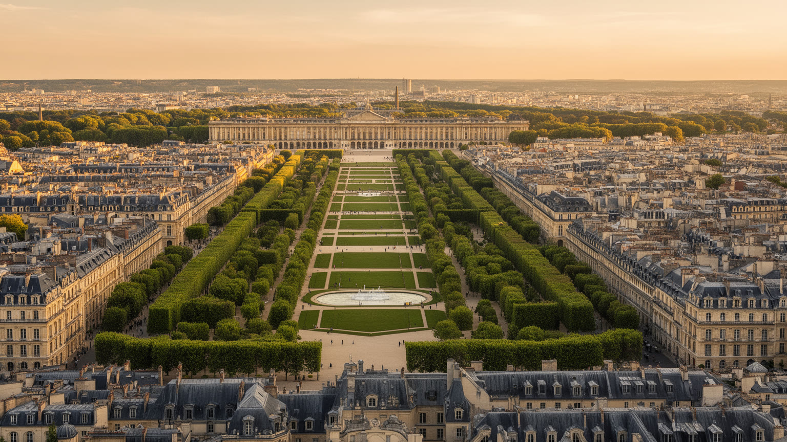
🇫🇷 フランス / イル＝ド＝フランス / World City Atlas
王の居館として設計された宮殿都市です。壮大な庭園軸、行政の町、革命の記憶、観光労働、パリ近郊の住宅生活が、整った街路の中で重なります。
都市の骨格
ヴェルサイユは宮殿だけの名所ではありません。王権が作った軸線、県庁都市の行政、観光と保存の仕事、パリ通勤圏の住宅生活が重なり、歴史の舞台が現在の近郊都市として使われています。
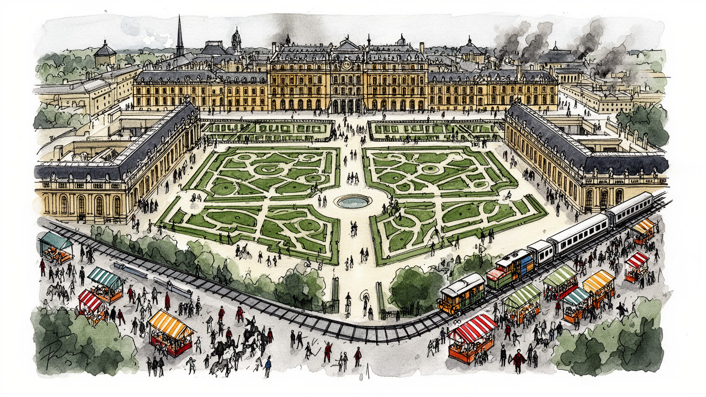
ヴェルサイユはパリ西郊の小都市ですが、絶対王政、革命、共和国、外交条約の記憶を抱えます。宮殿は国家権力の演出装置であり、現在も観光、式典、歴史教育を通じてフランスの政治的想像力を形作る場所です。今も。
雇用は宮殿観光、文化財管理、行政、教育、商業、飲食、近郊サービスに支えられます。華やかな見学動線の裏で、警備、清掃、案内、庭園管理、修復、通勤労働が毎日動きます。季節変動も仕事の条件です。街は働く場です。
宮廷文化、カトリック聖堂、音楽、庭園芸術、革命記憶が市街に重なります。ノートルダム地区とサンルイ地区には市場、教会、学校があり、王の都市としての象徴性と住民の落ち着いた日常が近くです。信仰も身近です。
旅行者は宮殿、鏡の間、庭園、トリアノンを目指すが、住民には学校、買い物、鉄道通勤、住宅費、週末混雑が現実になります。観光地のすぐ外に市場と住宅街が続くため、名所と生活の調整が重要です。静けさも資源です。
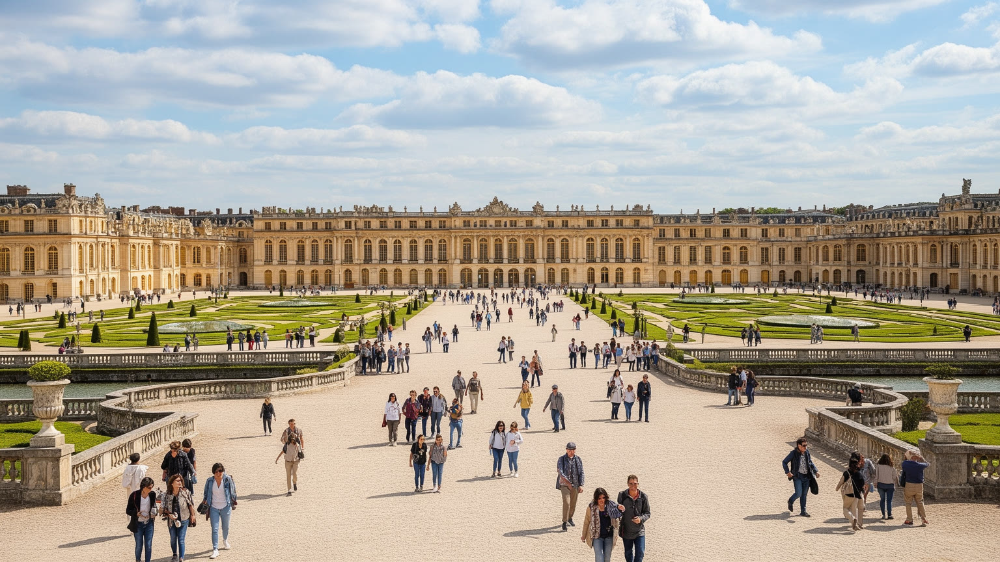
ヴェルサイユの都市を最初に決めるのは、宮殿正面から伸びる軸線です。大通りは単なる交通路ではなく、王の居館へ人と儀礼を集めるための視覚装置として設計されました。パリ、サン＝クルー、ソー方面へ向かう放射状の道、広い前庭、左右に整えられた街区は、権力が都市空間を通じて秩序を見せる方法でした。現在の旅行者はこの軸を歩いて入場列へ向かうが、同じ線はバス、タクシー、観光団体、学校遠足、警備、住民の移動も受け止めます。宮殿の巨大な正面は、建築の美しさだけでなく、誰が中心に近づけ、誰が外縁で働くのかを示す舞台でもあります。ノートルダム地区やサンルイ地区の街路は、宮廷に仕えた職人、官僚、商人、兵士の都市生活を支えました。王の都として作られた均整は、現代には景観規制や交通管理の制約にもなります。ヴェルサイユを読むには、正面の華やかさだけでなく、軸線が生んだ都市の序列、観光の流れ、日常の迂回、保存と生活の交渉を見る必要があります。大きな遠近法は、権力の記憶を美しい街路に残しながら、現在の近郊都市の使い勝手も静かに縛っています。駅から宮殿へ向かう人波も、かつて馬車と儀礼が通った空間を別の目的で使い直しています。軸線は過去の記号にとどまらず、今も人の向き、速度、滞留を決める都市の骨格です。広場で足を止めるだけでも、空間が人を中心へ向かわせる力を感じられます。
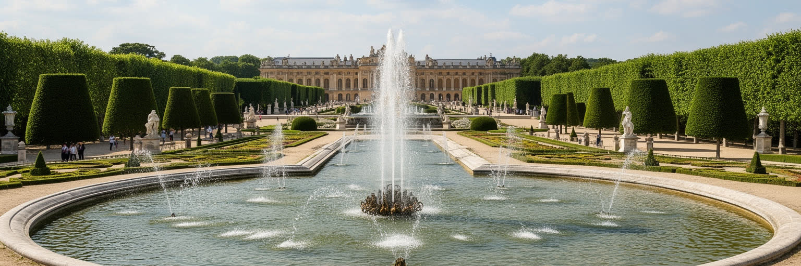
ヴェルサイユ庭園は、自然を整えた美しい背景ではなく、権力、技術、労働が組み合わさった巨大な都市装置です。アンドレ・ル・ノートルが作った遠近法、刈り込まれた植栽、運河、池、噴水、彫像は、王の支配が大地と水まで届くという感覚を演出しました。しかし噴水を動かすには大量の水が必要で、周辺の池、ポンプ、導水、維持管理が不可欠でした。庭園の秩序は、庭師、石工、配管職人、彫刻家、清掃員、警備員、案内スタッフの長い仕事に支えられています。季節によって花壇の色、樹木の剪定、水面の光、観光客の密度は変わり、雨や乾燥、暑熱は管理の難しさを増します。気候変動は歴史庭園にも影響し、古い樹木の健康、芝生の水需要、来訪者の熱中症対策を考えさせます。旅行者が見る均整は、実は毎日更新される作業の結果です。庭園は散歩、遠足、ランニング、家族の週末にも使われ、王権の舞台は住民の余暇の地図にもなります。ヴェルサイユの庭園を読む時、幾何学の美しさと同じ重さで、水の調達、植物の更新、土壌、閉鎖日の作業、保全費用を見たいです。庭園は王権の象徴でありながら、現在は公共的な遺産として多くの人に開かれています。その開放性を保つには、景観を固めるだけでなく、生きた植物と働く人の時間を尊重する必要があります。噴水ショーの華やかさも、雨量、貯水、ポンプ、電力、観客誘導に依存しています。水をどう見せ、どう節約するかは、歴史庭園を未来へ渡す実務上の焦点です。水音も都市の記憶になります。
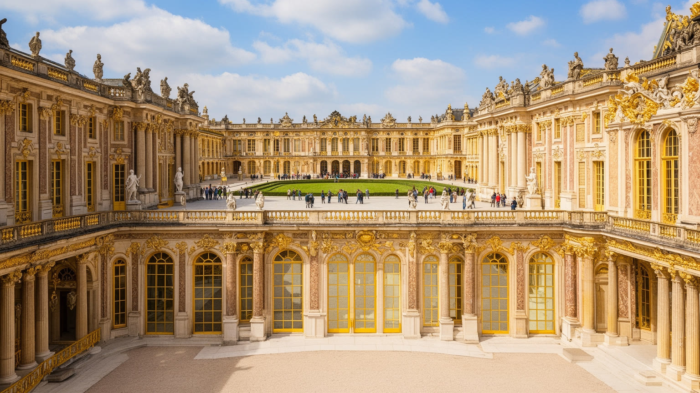
ヴェルサイユ宮殿は住居であり、政治機関であり、劇場でもありました。ルイ十四世が宮廷をこの地に集めたことで、貴族、官僚、外交使節、芸術家、職人、従者は王の生活リズムに組み込まれました。寝起き、食事、礼拝、謁見、舞踏、狩猟、祝祭は私的な習慣ではなく、王の権威を見せ、序列を確かめる儀礼でした。鏡の間や大居室の豪華さは、フランスの財力と芸術を示す一方、国家財政、租税、戦争、農村の負担という外部の現実ともつながっていました。宮廷は文化を育て、音楽、演劇、服飾、料理、外交作法を洗練させましたが、同時に権力への近さが人生を左右する閉じた社会でもありました。現在の見学者は金箔や天井画に圧倒されますが、そこで動いていたのは政治を日常動作に変える制度です。部屋の配置、入れる場所、待たされる時間、視線の向きが、誰が力を持つかを決めました。ヴェルサイユを読むには、宮殿を美術館として見るだけでなく、空間が人を従わせ、競わせ、魅了し、疲弊させる仕組みとして見る必要があります。王権は石と鏡の中に閉じ込められた過去ではなく、権威がどのように演出されるかを考える手がかりを今も与えています。豪華な部屋の連続は、自由に歩ける展示空間に見えますが、かつては身分ごとに厳しく分けられた接近の地図でした。その距離感を想像すると、宮殿の輝きは政治の圧力として立ち上がります。
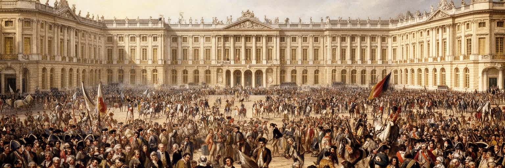
ヴェルサイユは絶対王政の象徴であると同時に、フランス革命の重要な舞台でもあります。三部会の招集、球戯場の誓い、食糧危機に怒った人びとの行進、王家のパリ移送は、宮殿都市の意味を大きく変えました。王権を見せるための場所が、国民代表、都市民、女性たち、兵士、新聞、噂が交錯する政治空間になりました。革命の記憶はパリのバスティーユだけでは語れません。ヴェルサイユでは、宮殿の正面、議場、球戯場、旧市街の路地が、国家主権の転換を具体的な場所として残します。観光で鏡の間を見た後に球戯場を思い浮かべると、同じ都市が王の秩序と市民の要求を抱え込んでいたことが見えます。革命は美しい宮殿の外側から突然来たのではなく、財政難、穀物価格、身分制、出版、地方代表、宮廷生活への不満が積み重なった結果でした。ヴェルサイユを読む時、宮殿の豪華さを称賛するだけでは不十分です。その豪華さがどの負担に支えられ、どの不公平を可視化し、どの政治的反発を呼んだのかまで見なければなりません。王の都が自由の言葉を生む場所にもなったことは、都市空間が権力を固定するだけでなく、時に反転させる力を持つことを示しています。記念施設をたどる歩行は、歴史上の大事件を抽象的な理念から具体的な距離へ戻してくれます。宮殿と球戯場の近さは、体制の変化が遠い戦場ではなく都市の日常空間で起きたことを示します。
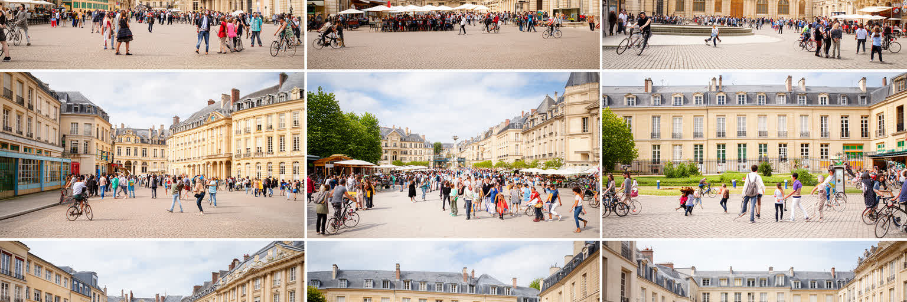
ヴェルサイユを宮殿だけで理解すると、住民の都市が見えにくくなります。駅から宮殿へ向かう観光動線の脇には、ノートルダム市場、サンルイ地区の街路、学校、教会、役所、集合住宅、公園や地域スポーツクラブが並びます。市はイヴリーヌ県の県庁所在地でもあり、行政職員、教員、医療従事者、商店主、学生、通勤者が日常のリズムを作ります。古い建物と整った街路は落ち着いた環境を与える一方、住宅費の高さ、景観規制、観光客の集中、駐車、生活サービスの維持は住民にとって現実的な問題になります。週末や休暇期には宮殿周辺が混み、平日朝にはパリ方面への通勤が駅に集中します。カフェや市場は観光消費を受け止めながら、近所の買い物や会話の場でもあります。宗教生活も、王室礼拝堂の壮麗さだけではなく、地区教会のミサ、家族の儀礼、学校行事として開かれます。ヴェルサイユの魅力は、巨大な歴史記念物の隣に、静かな住宅街と市場があることです。ですがその近さは、保存と生活、観光と物価、静けさと集客を調整し続ける必要を生みます。住民の都市を読むことで、宮殿都市は展示された過去ではなく、歴史を背負いながら普通の暮らしを組み立てる現在の街として見えてきます。子どもを送る親、買い物袋を持つ高齢者、県庁へ向かう職員の動きは、宮殿前の行列と同じ都市の時間です。生活の反復があるからこそ、歴史都市は毎日開き直されます。
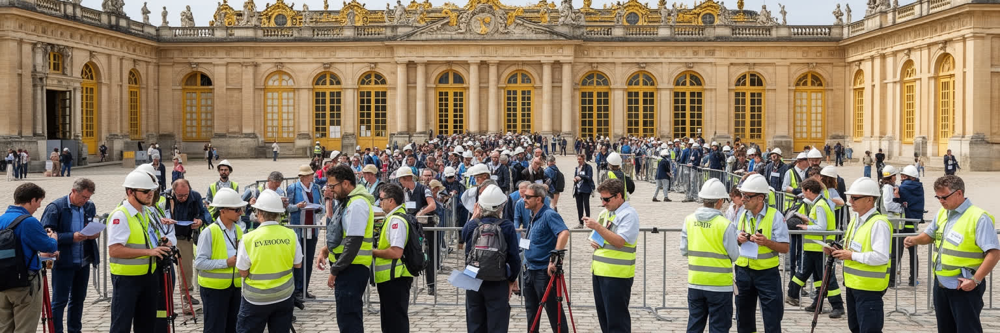
ヴェルサイユ観光は、入場券を買って宮殿を歩くだけの単純な消費ではありません。世界中から訪れる人を受け入れるために、予約システム、警備、手荷物検査、案内、清掃、展示管理、庭園整備、修復、翻訳、ショップ、飲食、交通、ホテル、バス運行が連動します。来訪者の多さは地域経済を支えますが、働く人には季節変動、長い立ち仕事、多言語対応、混雑時の緊張、低賃金職の不安定さもあります。観光客が写真を撮る鏡の間や庭園の背後では、床の保護、湿度管理、壊れやすい装飾の監視、落とし物対応、救急対応が常に行われます。団体観光が集中すれば街路や駅も混み、住民の移動や市場の営業に影響します。一方で、観光が弱まれば飲食店、ガイド、土産物店、文化財予算に打撃が出ます。ヴェルサイユを読むには、名所の価値だけでなく、その価値を毎日運営する労働を見る必要があります。遺産観光は過去を売る産業ではなく、現在のサービス労働、専門技術、公共予算、民間消費が組み合わさる都市経済です。訪問者の満足と文化財の保護、住民の生活と雇用の安定を同時に考えられるかが、世界的観光地としての成熟を決めます。華やかな記憶は、見えにくい仕事の積み重ねで初めて開かれています。混雑をさばく係員の声や、閉館後に残る清掃の時間は、都市が観光を受け入れるための基礎です。名所を支える仕事を見れば、旅の体験はより具体的になります。
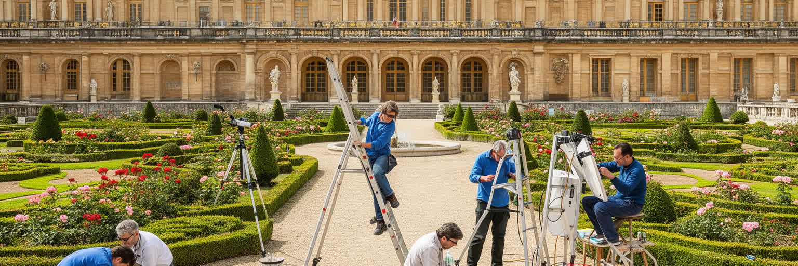
ヴェルサイユの遺産管理は、古い建物をそのまま残す作業ではありません。宮殿、庭園、トリアノン、彫刻、家具、絵画、配管、屋根、石材、樹木、来訪者動線を同時に守る複雑な運営です。世界遺産としての評価は強い集客力を生みますが、集客そのものが床、空気、音、混雑、周辺交通に負荷をかけます。修復には専門技術と資金が必要で、どの時代の状態を優先するか、失われた部分をどう補うか、新しい安全基準やバリアフリーをどこまで入れるかという判断も避けられません。文化財は国家の象徴であり、地域の雇用であり、教育資源であり、観光商品でもあるため、関係者の期待は一致しません。庭園では歴史的な景観を守りながら、病害、強風、乾燥、暑熱、来訪者の踏圧に対応しなければなりません。ヴェルサイユを読むには、完成した美を眺めるだけでなく、保存が常に選択と妥協を含むことを理解する必要があります。修復現場、閉鎖された区画、控えめな案内板、警備の線、予約制の導入は、遺産を未来へ渡すための都市運営の一部です。過去を尊重するとは、過去を触れないものにすることではなく、現在の身体、技術、財政、気候の条件の中で使い続ける方法を考えることです。たとえば修復中の足場は景観を一時的に隠しますが、その不便は次の世代へ空間を渡すための投資でもあります。保存は完成状態ではなく、終わらない管理の連続として理解したいところです。
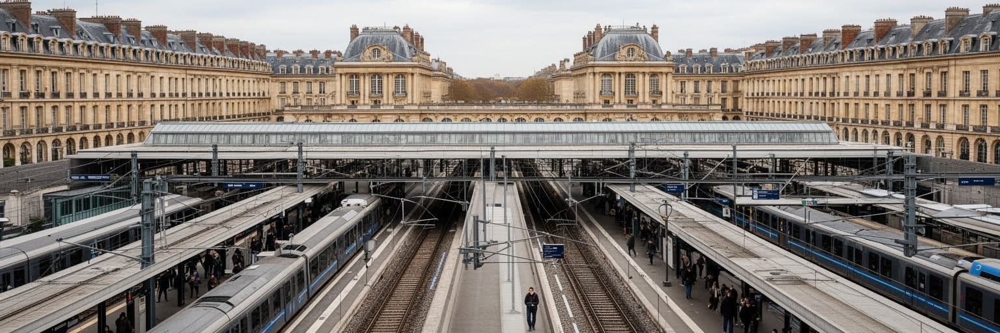
ヴェルサイユは歴史都市であると同時に、パリ西郊の鉄道都市でもあります。複数の駅からパリ中心部やラ・デファンス方面へつながり、住民は通勤、通学、買い物、文化活動を大都市圏の中で組み立てます。観光客にとって鉄道は宮殿へのアクセス手段ですが、住民にとっては仕事、学校、医療、家族の予定を支える日常インフラです。朝夕の混雑、遅延、ストライキ、運賃、駅から住宅地までの距離は、宮殿の華やかさとは別の都市経験を作ります。パリに近いことは雇用機会を広げ、不動産価値を高めるが、同時に住宅費を押し上げ、若い世帯や低所得者が住みにくい街にもします。道路交通では観光バス、自家用車、配達、住民の移動が重なり、宮殿周辺の空間は常に調整を迫られます。ヴェルサイユを読む時、王のために作られた道と、現代の通勤鉄道を同じ地図に置くと、都市の時間がよく見えます。かつて中心へ人を集めた軸線は、今ではパリ大都市圏へ人を送り出し、また世界の旅行者を迎えます。近郊都市としての利便性は、観光地としての魅力と無関係ではありません。駅前の案内、歩行者動線、自転車、バス接続が整えば、訪問者にも住民にも使いやすい都市になります。鉄道の毎日の正確さが、歴史都市の現在を支えています。パリで働き、ヴェルサイユで暮らす人の選択は、静かな環境と大都市雇用を結ぶ近郊の典型でもあります。その均衡は、運行本数と住宅の手ごろさに大きく左右されます。
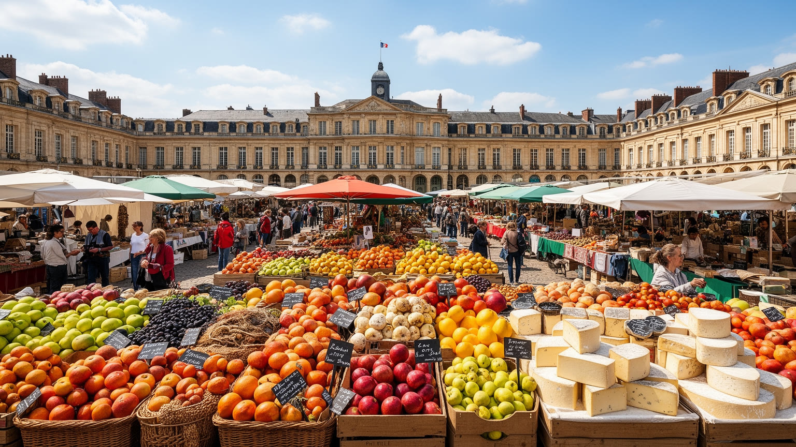
ヴェルサイユの日常を知るには、宮殿の食卓だけでなく市場を歩く必要があります。ノートルダム市場を中心に、パン、チーズ、肉、魚、野菜、惣菜、ワイン、花、カフェが並び、住民の買い物と旅行者の休憩が重なります。宮廷料理の記憶は街のイメージを豊かにしますが、現代の食文化は高級レストランだけでは成り立ちません。学校帰りの軽食、通勤前のパン、週末の買い出し、家族の昼食、観光客の簡単な食事、働く人のまかないが、町の食の基礎です。市場は地域農産物やフランス食文化を見せる舞台であると同時に、物価、家賃、人手不足、観光需要に左右される商業空間でもあります。観光地化が進むと店の構成は土産物や外食へ傾きやすく、住民が普段使う店を保てるかが街の質を決めます。ヴェルサイユを読むには、豪奢な宮廷の宴と、現在の市場で交わされる短い会話をつなげて考えることが大切です。食は歴史を親しみやすくするが、同時に地域の労働と家計を映します。市場のにぎわいは、宮殿都市が観光の舞台に閉じず、住民が朝から暮らしを作る普通の街であることを示しています。美しい皿の裏には、仕入れ、早朝の準備、清掃、価格交渉、常連客との信頼があります。週末に広場がにぎわう時、王の都市は家族の台所へ戻ります。歴史の重さをほどくのは、焼きたてのパンや店主との挨拶のような小さな反復です。市場の匂いも記憶になります。
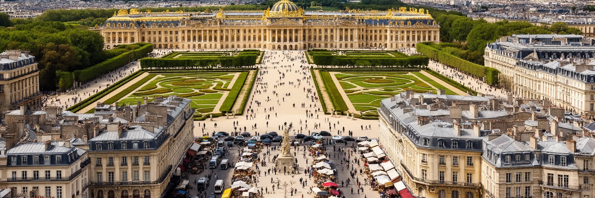
ヴェルサイユを読むことは、宮殿と庭園の美しさを、王権、革命、観光、労働、住宅、鉄道、遺産管理の層へ開くことです。世界的な知名度は鏡の間や噴水に集中しがちですが、都市の重要性はそれだけではありません。王が空間を使って権威を見せた方法、三部会と革命が国家の主権を問い直した記憶、文化財を守る専門技術、観光を支えるサービス労働、パリ大都市圏の通勤生活が、同じ小さなコミューンに収まっています。宮殿は過去の豪華さを示すだけでなく、権力がどのように見せられ、どのように批判され、どのように保存されるかを考えさせます。庭園は秩序の美学であると同時に、水、植物、気候、労働の現場でもあります。旧市街の市場や住宅街は、歴史都市が住民の生活なしには続かないことを教えます。ヴェルサイユの課題は、名所としての圧倒的な集客力と、落ち着いた近郊都市としての暮らしを両立させることにあります。観光客が通る道、住民が通勤する駅、修復中の部屋、週末の市場を一つの地図に置くと、この都市は王の記念碑ではなく、フランスの政治文化と都市生活が凝縮した場所として見えてきます。美しい秩序の中にある緊張を読むほど、ヴェルサイユはより現代的な都市になります。過去の権力をただ崇めるのでも、観光の便利さだけで評価するのでもなく、そこで働き暮らす人の時間を重ねることが必要です。その重ね合わせが、宮殿都市を今の都市として理解する入口になります。